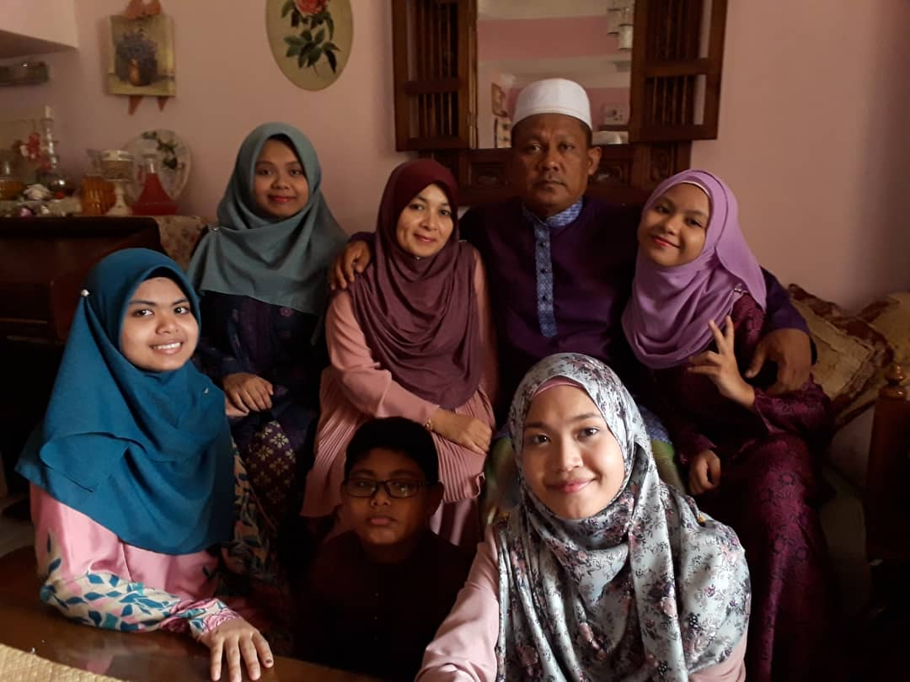
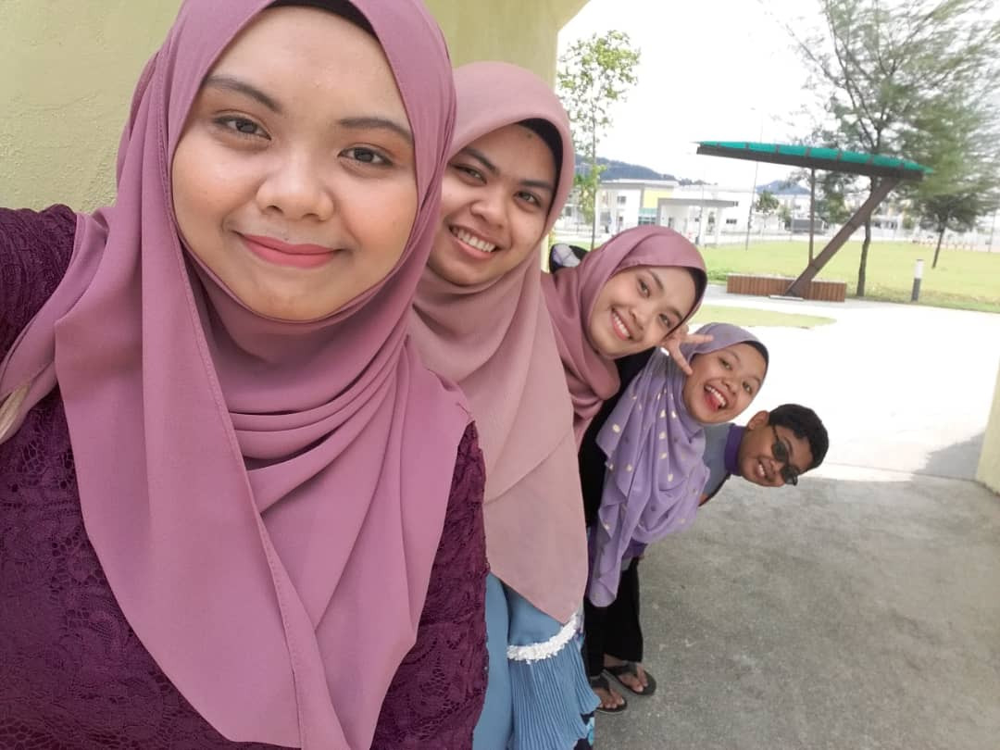

| HOME | BIODATA | EXPERIENCE | EDUCATION | FAMILY | FAVOURITE | GALLERY | CONTACT |
|---|
"Nothing is better than going home to family and eating good food and relaxing."-Irina Shayk
| MY FAMILY | Name | Relationship |
|---|---|---|
| Nasri bin Saud | Father | |
| Suriza binti Yahaya | Mother | |
| Nurul Izzaty | Sister | |
| Anis Yuhanna | Sister | |
| Sarah Natasya | Me | |
| Riesya Umairah | Little Sister | |
| Irman Muhammad Daniel | Little Brother |
|  | As you can see at the picture on the left, this is all my family members <3 This picture was taken on 2019 during "Hari Raya Aidilfitri". Everyone was so happy at that time because we get to celebrate "Hari Raya" together. Both of my parents taught us to always be grateful in life no matter what ever happen. I really adores my dad as he work so hard to make sure that his family get the best out of the best. He never complained eventhough I know it is hard for him but he always care about his family. Same goes to my mother. She is such a loving mother to her children. There is no word could describe how much I love both of them. |
  |
| This is all of my siblings. I have 5 siblings including me. Each of them has a very different personality that it is very hard to tell. My first sister, Nurul or I called her "Kaklong".She is currently working as the nurse at Hospital Sungai Buloh. I can say that she is very independent and very passionate in doing her work. She also very caring and always offer for a help <3 Next, we move to my second sister who I called as "Kakngah". Kakngah is fierce person yet she also a loving person. She just finished her Degree in Public Admin and I really adores her in studies. She is very clever and she always share her knowledge with the other siblings which is the thing that I really like about her. She also always help me in my studies. My little sister, Riesya or I also called her "Ica". She is turning 14 on 2020 and she is the only siblings that went to a boarding school. Eventhough that I rarely meet her, but when we get to meet each other...everything will goes crazy. She is such a crackhead person that always makes me laugh to death. Thanks to her for always made my day brighter <3 And lastly, my little brother who I called Daniel or "Onion". I don't know how did he get that nickname but somehow I think it is kinda cute. He is my one only little brother that I have in my life and the only "hero" among the siblings. He loves to make me feel annoyed but then I still love him. Sometimes, he is quite clingy since he was the youngest in the family. Yeah, he got the ticket but as a siblings, we always received the same amount of love from both of our parents <3 |
| This is my grandparents. On the left side, that is my grandmother. Her name is Embun but I called her "Tok". Tok is turning 97 years old this year yet she is very strong independent woman. She also loves gardening. Every evening she will go to the backyard at my village and start gardening. At the right side, that is my late grandfather. His name is Yahaya and I called her "Wan". I miss my Wan so much and I wish he is still her with me. However, Allah loves him more than I am. I still remember when I was 6 years old, he always wake me up for morning prayer and when I refused to wake up, he will tickles me. I really miss all those sweet moment with him. However, I'm glad that I still have Tok right beside me :) |
 |